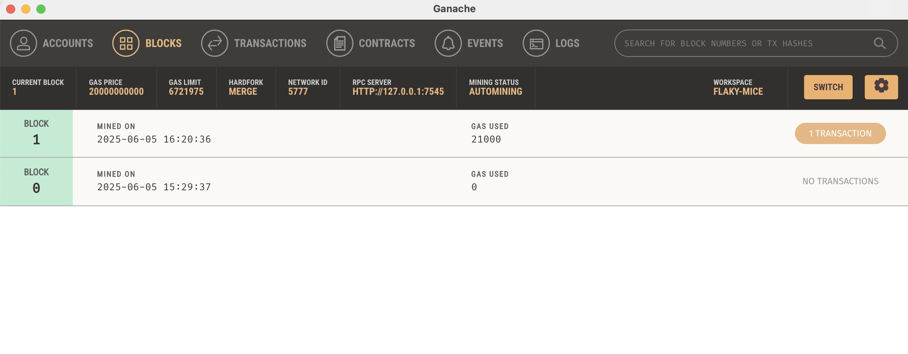

오늘은 Ganache를 설치하고 Web3.js를 이용하여 이더리움 테스트 환경에서 트랜잭션을 발생시켜보았다. 새로운 지갑을 생성하고, 그 지갑 주소로 50 ETH를 전송하는 과정을 직접 코드로 구현했다.
📦 테스트 코드
import { web3 } from '.'HTTP://127.0.0.1:7545'';
import { Numbers } from 'web3-types';
export const transferEth = (amount: Numbers) => {
const privateKey = '0x8c246eb51185784c61eea37e84bf4138d24d7d878f9aa692efd6d0ffe50a79c0';
const transferTX = {
from: "0x50fd6292C7bBeeb9d3b27Ad82edd38824A489D77",
to: '0x5798b7C619E9B5723Fce1381ae3c06C86C05E343',
value: web3.utils.toWei('50', 'ether'),
gas: 30000,
gasPrice: web3.utils.toWei('10', 'Gwei'),
};
web3.eth.accounts.signTransaction(transferTX, privateKey)
.then((signedTX) => {
return web3.eth.sendSignedTransaction(signedTX.rawTransaction);
})
.then((receipt) => {
console.log('Transaction successful:', receipt);
})
.catch((error) => {
console.error('Transaction failed:', error);
});
};
✅ 실행 결과
터미널에서 npm run test 명령어로 실행했을 때, 트랜잭션이 정상적으로 처리되었음을 확인할 수 있었다.
Transaction successful: {
transactionHash: '0xfeb9c95b426980c46bf5094f92eaaec82c7b0162b8ab8b489f2c28731e4ce2a5',
from: '0x50fd6292c7bbeeb9d3b27ad82edd38824a489d77',
to: '0x5798b7c619e9b5723fce1381ae3c06c86c05e343',
value: 50000000000000000000,
gasUsed: 21000,
blockNumber: 1,
status: 1,
...
}
Ganache에서 확인한 블록 정보
▲ Ganache에서 생성된 블록 정보 확인
Ganache에서 확인한 트랜잭션 정보

▲ 트랜잭션이 포함된 블록 내역 및 주소, Gas 사용량 확인
Ganache를 통해 로컬 테스트 환경에서 지갑을 생성하고 직접 트랜잭션 전송을 해보면서 Web3.js가 실제로 어떻게 동작하는지를 알 수 있었다. 지갑만들기에 한 발 더 가까워졌다.